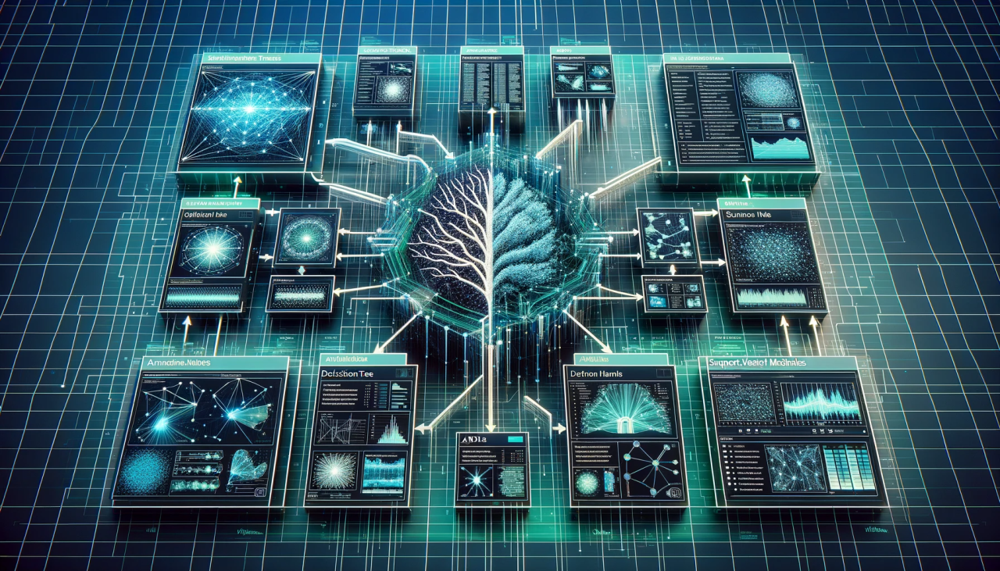
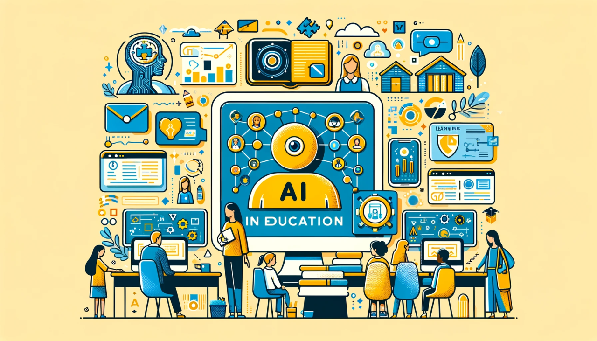
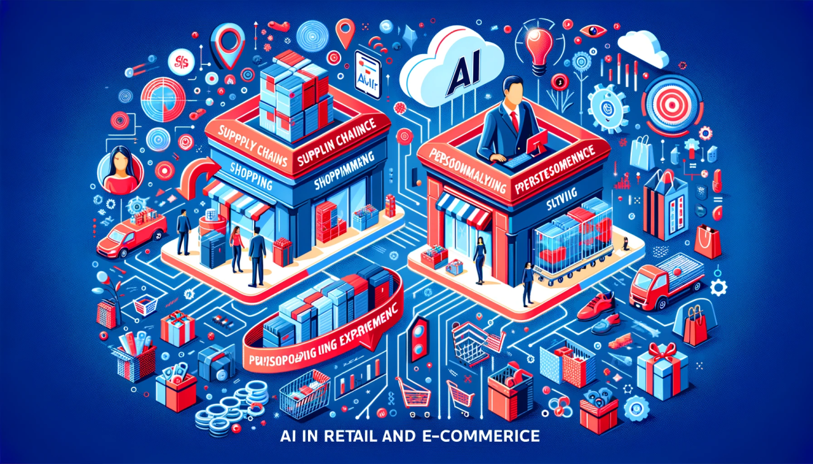
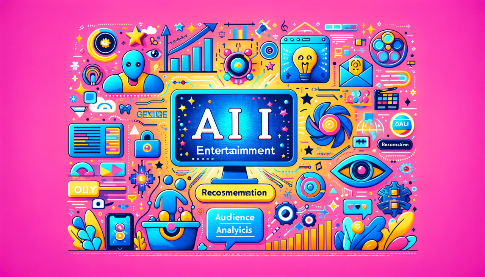

Session 2#
기본을 탐험하다: 인공지능과 그 도구들 (Exploring the Fundamentals: AI and Its Tools)

1. 인공지능과 데이터 사이언스 (AI and Data Science)
데이터 사이언스의 개념과 인공지능과의 관계
데이터 처리 및 분석의 중요성
인공지능에서 데이터 사이언스의 역할과 응용 사례
2. 인공지능 연구 도구 및 프레임워크 (AI Research Tools and Frameworks)
주요 AI 프레임워크 소개 (예: TensorFlow, PyTorch)
각 프레임워크의 특징과 장단점
프레임워크 선택 기준과 사용 사례
3. 인공지능 적용 분야 (AI Application Fields)
다양한 산업에서의 인공지능 적용 사례
의료, 금융, 교육 등 특정 분야에서의 AI 활용
인공지능의 사회적, 경제적 영향
4. 인공지능 기술의 한계 및 도전 과제 (Limitations and Challenges of AI Technologies)
기술적 한계와 윤리적 도전
AI의 미해결 문제와 미래 연구 방향
인공지능의 안전성과 편향 문제
5. 인공지능을 위한 기초 수학 지식 (Basic Mathematics for AI)
인공지능 연구에 필수적인 수학 분야 소개
통계학, 선형대수, 미적분학의 기초
실제 AI 문제에 수학 적용 사례
1. 인공지능과 데이터 사이언스 (AI and Data Science)#
서론#
{kind=link}
인공지능과 데이터 사이언스의 교차점 탐험에 오신 것을 환영합니다. 이 두 분야는 독립적으로 존재하지만, 함께 기술 혁신과 창의적인 해결책을 만들어냅니다.
AI는 인간 지능이 필요한 작업을 수행하는 기계를 만드는 것을 목표로 합니다.
AI는 학습, 문제 해결, 의사 결정과 같은 다양한 기능을 포함합니다.
이 강의에서는 AI와 데이터 사이언스가 어떻게 서로 보완하며 협력하는지에 대해 알아볼 것입니다.
AI에서의 데이터의 역할#

AI 시스템은 대량의 데이터를 사용하여 훈련됩니다. 이 데이터는 AI 알고리즘이 학습하고 정보에 기반한 결정을 내리는 데 필요한 정보를 제공합니다.
데이터는 AI가 세계를 이해하고 패턴을 인식하는 데 중요한 역할을 합니다.
데이터 없이 AI는 효과적으로 작동할 수 없습니다.
데이터는 통찰력과 지식을 추출하는 데 필요한 기본적인 요소입니다.
데이터 사이언스: 기초#
{kind=link}
데이터 사이언스는 데이터에서 지식과 통찰력을 추출하는 다학제적 분야입니다.
통계적 방법, 데이터 마이닝, 예측 모델링과 같은 다양한 데이터 분석 기법이 포함됩니다.
데이터 사이언스는 정보의 숨겨진 패턴을 발견하고 이해하는 데 중점을 둡니다.
데이터 사이언스는 데이터를 가치 있는 정보로 전환하는 과정입니다.
AI와 데이터 사이언스의 통합#

AI는 데이터 사이언스 기법을 사용하여 데이터를 처리하고 분석하며, 이는 지능형 시스템 개발에 중요합니다.
데이터 사이언스는 AI에게 필수적인 통찰력을 제공합니다.
데이터 분석은 AI의 학습 과정에 필수적인 부분입니다.
이 통합은 AI가 보다 정확하고 효과적인 결정을 내리는 데 도움을 줍니다.
머신러닝: 핵심 요소#

머신러닝은 AI의 하위 집합으로, 데이터를 기반으로 학습하고 예측이나 결정을 내리는 알고리즘을 훈련시킵니다.
머신러닝은 AI에게 자율적인 학습 능력을 부여합니다.
머신러닝은 패턴 인식과 데이터 분석에 필수적입니다.
이를 통해 AI는 더 정교하고 정확한 예측을 할 수 있습니다.
2. 인공지능 연구 도구 및 프레임워크 (AI Research Tools and Frameworks)#
서론#
{kind=link}
오늘은 인공지능 연구 도구 및 프레임워크의 중요한 세계에 대해 탐구합니다.
이 도구들은 인공지능 개발의 근간을 이루며, 지능형 시스템을 만들기 위한 환경과 능력을 제공합니다.
AI 연구 도구는 기초적인 통계 소프트웨어에서부터 고급 프레임워크로 발전해 왔습니다.
TensorFlow와 PyTorch는 현대의 가장 인기 있는 프레임워크 중 일부입니다.
초기 도구들은 기능적으로 제한적이었지만, 현대의 프레임워크는 유연성, 확장성, 효율성을 제공합니다.
데이터 과학자의 도구 상자#
{kind=link}
AI 연구에는 Python과 같은 프로그래밍 언어, 데이터 처리 유틸리티, 시각화 소프트웨어 등 다양한 도구가 필요합니다.
Jupyter 노트북과 같은 도구는 실험과 문서화에 유용합니다.
이러한 도구의 효과적인 사용은 AI 개발과 실험을 가속화합니다.
오늘날의 AI 연구 환경에서 협업 도구도 중요한 역할을 합니다.
이 도구들은 데이터 과학자들이 복잡한 AI 모델을 효과적으로 구축하고 실험할 수 있도록 도와줍니다.
AI 연구에서의 클라우드 컴퓨팅#

클라우드 플랫폼은 강력한 컴퓨팅 리소스에 대한 접근을 제공함으로써 AI 연구에 혁명을 일으켰습니다.
이들은 확장성과 접근성을 제공하여, 연구자들이 하드웨어 제한 없이 복잡한 모델을 작업할 수 있게 해줍니다.
AWS, Google Cloud, Azure와 같은 클라우드 서비스는 현대 AI 연구에 필수적입니다.
이러한 서비스는 전 세계적으로 자원을 공유하고 협업할 수 있는 기능을 제공합니다.
클라우드 컴퓨팅은 연구자들이 어디서든 AI 실험을 수행할 수 있게 해줍니다.
AI 알고리즘 비교#
{kind=link}
서로 다른 AI 프로젝트는 각기 다른 알고리즘을 필요로 하며, 각 알고리즘은 고유의 장단점을 가지고 있습니다.
결정 트리, 신경망, 서포트 벡터 머신 등은 주요 사용되는 알고리즘들입니다.
이러한 차이점을 이해하는 것은 적합한 도구를 선택하는 데 중요합니다.
TensorFlow와 PyTorch와 같은 프레임워크는 다양한 알고리즘을 지원합니다.
알고리즘 선택은 프로젝트의 성공에 중대한 영향을 미칩니다.
실제 애플리케이션에서의 AI 프레임워크#
{kind=link}
AI 프레임워크는 연구용으로만 사용되는 것이 아니라, 다양한 산업 분야의 실제 애플리케이션에서 활발히 사용됩니다.
의료, 금융, 자동차 산업 등 AI가 중요한 영향을 미치는 분야들입니다.
이 프레임워크들은 AI 기반 솔루션으로 산업을 변혁하는 데 중요합니다.
이들은 AI 연구를 실제 결과로 전환하는 데 필수적입니다.
실제 환경에서의 프레임워크 적용은 AI의 실용성을 증명합니다.
오픈 소스 협업#
{kind=link}
AI 커뮤니티는 TensorFlow와 PyTorch와 같은 오픈 소스 협업을 통해 번성합니다.
이러한 협업은 혁신을 가속화하고 복잡한 문제를 더 효율적으로 해결하는 데 도움이 됩니다.
오픈 소스 도구는 더 큰 투명성과 지식 공유를 가능하게 합니다.
이들은 AI 분야의 발전에 필수적인 협력 정신을 구현합니다.
오픈 소스는 지식과 경험을 공유하는 플랫폼으로서 AI 연구의 진보를 촉진합니다.
3. 인공지능 적용 분야 (AI Application Fields)#
서론#
다양한 산업 분야에서 인공지능(AI)의 변혁적인 영향력을 탐구합니다.
AI의 다재다능함은 효율성, 정확성, 혁신성을 강화하며 여러 분야에서 게임 체인저 역할을 합니다.
AI는 기술 발전뿐만 아니라 산업 전반에 걸쳐 혁신을 촉진합니다.
오늘날 AI는 생활의 모든 영역에서 중요한 역할을 하고 있습니다.
이 강의에서는 AI가 어떻게 각각의 분야를 변화시키고 있는지 살펴볼 것입니다.
AI in Healthcare#
{kind=link}
AI는 진단, 치료 계획 수립, 환자 관리 등 의료 분야에서 혁명적인 변화를 가져오고 있습니다.
의료 영상 분석, 환자 결과 예측, 수술 보조 등에 AI가 사용됩니다.
AI는 개인의 유전적 프로필에 맞춘 맞춤형 의약품을 제공하는 데 도움을 줍니다.
환자 모니터링 시스템 및 로봇 보조를 통해 환자 관리를 향상시킵니다.
AI는 의학 과학의 중요한 발전을 약속합니다.
AI in Automotive Industry#

자동차 산업에서 AI는 자율 주행 차량과 스마트 제조에 중요한 역할을 합니다.
자율 주행 차량은 도로 안전성과 효율성을 향상시킵니다.
예측 유지보수를 통해 다운타임을 줄이고 비용을 절감합니다.
공급망 최적화 및 제조 공정 향상에도 AI가 사용됩니다.
AI의 통합은 스마트하고 연결된 교통의 미래로 이끕니다.
AI in Finance#
{kind=link}
금융 분야에서 AI는 자동 거래, 사기 탐지, 위험 관리를 통해 변화를 가져옵니다.
대량의 금융 데이터를 분석하여 투자 통찰력과 시장 동향을 제공합니다.
실시간 사기 탐지에 AI 기반 알고리즘을 사용하여 보안을 강화합니다.
맞춤형 은행 서비스를 제공하여 고객에게 맞춤형 금융 조언을 제공합니다.
AI의 분석 능력은 금융을 더 효율적이고 안전하게 만듭니다.
AI in Education#
{kind=link}
AI는 학습 경험을 개인화하고, 적응형 학습 플랫폼과 가상 튜터를 제공합니다.
교육자에게 데이터 기반 통찰력을 제공하여 교육 전략을 개선하는 데 도움을 줍니다.
AI는 행정적인 작업을 자동화하여 교육자가 교육에 더 많은 시간을 할애할 수 있게 합니다.
AI는 언어 학습 및 특수 교육에서 적응형 기술을 통해 지원합니다.
AI의 사용은 학습 과정을 더 접근 가능하고 맞춤화된 방식으로 변형시킵니다.
AI in Retail and E-Commerce#
{kind=link}
AI는 소매 및 전자 상거래에서 고객 경험을 개선하고, 맞춤형 추천 및 재고 관리를 통해 향상시킵니다.
공급망을 최적화하고, 수요를 예측하며, 낭비를 줄입니다.
AI 기반 챗봇은 효율적인 고객 서비스를 제공하여 참여도를 높입니다.
타겟 마케팅 및 판매 예측에서도 중요한 역할을 합니다.
소매 분야는 AI 덕분에 더 고객 중심적이고 효율적으로 변모하고 있습니다.
AI in Smart Cities and Urban Planning#

AI는 교통 시스템 관리, 공공 서비스 최적화, 지속 가능성 노력 강화 등 스마트 도시 개발에 기여합니다.
에너지 사용을 최적화하고 환경적 영향을 줄이는 데 도움을 줍니다.
데이터 분석 및 예측 모델링을 통해 더 나은 도시 계획을 가능하게 합니다.
스마트 인프라를 통해 공공 안전과 편의를 향상시킵니다.
AI의 도시 개발 통합은 더 지속 가능하고 효율적인 도시로 이끕니다.
AI in Entertainment and Media#
{kind=link}
AI는 콘텐츠를 개인화하고 사용자 경험을 향상시켜 엔터테인먼트를 변화시킵니다.
시청자 선호도를 분석하여 영화 및 쇼 추천에 사용됩니다.
콘텐츠 생성에서 관객 참여를 최적화하기 위해 사용됩니다.
관객 분석을 통해 미디어 제작자에게 통찰력을 제공합니다.
AI 덕분에 엔터테인먼트 산업은 더욱 창의적이고 사용자 중심적으로 변화하고 있습니다.
4. 인공지능 기술의 한계 및 도전 과제 (Limitations and Challenges of AI Technologies)#
서론#
현재 인공지능(AI) 기술이 직면한 한계와 도전 과제에 대해 논의합니다.
이러한 도전 과제들은 AI 시스템의 개발과 배포를 형성하는 데 중요한 역할을 합니다.
AI의 한계를 이해하는 것은 그 가능성을 최대화하는 데 필수적입니다.
AI 기술의 발전과 함께 이러한 도전 과제를 해결하는 것이 중요합니다.
오늘 강의에서는 AI가 직면한 주요 문제들을 살펴볼 것입니다.
AI Bias and Ethical Concerns#
{kind=link}
AI 시스템은 훈련 데이터에 존재하는 편향을 물려받을 수 있으며, 이는 불공정하거나 비윤리적인 결과를 초래할 수 있습니다.
이러한 편향은 고용, 법 집행, 대출 승인 등 중요한 영역의 의사 결정에 영향을 미칠 수 있습니다.
다양한 데이터셋과 지속적인 모니터링을 통해 이러한 편향을 해결해야 합니다.
AI 개발에서 윤리적 고려는 해를 피하고 공정성을 보장하기 위해 필수적입니다.
Data Privacy and Security#
{kind=link}
AI 시스템은 종종 민감한 개인 데이터를 다루며, 이로 인해 프라이버시와 보안에 대한 우려가 증가합니다.
데이터 유출 위협과 AI를 이용한 감시의 오남용 가능성이 큽니다.
데이터 보호를 보장하고 강력한 보안 조치를 구현하는 것이 필수적입니다.
AI를 활용하면서 개인 프라이버시를 보호하는 균형을 맞추는 것이 주요한 도전 과제입니다.
Explainability and Transparency#

많은 AI 시스템은 설명 가능성이 부족하여, 그들의 의사 결정 과정을 이해하기 어렵습니다.
AI의 “블랙 박스” 성격은 특히 중요한 응용 분야에서 신뢰 문제를 야기할 수 있습니다.
AI를 더 해석 가능하고 투명하게 만들기 위한 노력이 계속되고 있습니다.
설명 가능성은 AI 시스템의 책임감과 신뢰성을 위해 필수적입니다.
Dependence and Automation Bias#

AI에 대한 과도한 의존은 자동화 편향으로 이어질 수 있으며, 이는 인간이 AI 결정을 우선시하게 만듭니다.
AI 시스템이 실패하거나 오류를 범할 때, 이러한 의존성은 문제가 될 수 있습니다.
AI 지원과 인간 의사 결정 간의 균형을 유지하는 것이 중요합니다.
사용자들에게 AI의 한계를 교육하는 것은 이 위험을 완화하는 데 중요합니다.
Scalability and Integration#

기존 시스템에 AI를 통합하는 것은 호환성 및 확장성 문제로 인해 도전적일 수 있습니다.
AI 시스템은 다양한 환경과 요구 사항에 맞게 확장 가능하고 적응 가능해야 합니다.
기술적 및 인프라 장벽을 극복하는 것은 성공적인 AI 구현의 핵심입니다.
효과적인 통합은 AI 개발자, 이해관계자 및 최종 사용자 간의 협력을 필요로 합니다.
Accessibility and Inclusivity#
{kind=link}
모든 사용자가 배경이나 능력에 관계없이 AI 기술을 접근하고 사용할 수 있도록 하는 것은 도전 과제입니다.
AI 도구와 인터페이스는 종종 다양한 사용자 요구를 고려하지 않습니다.
범용 디자인 원칙에 중점을 두고 AI를 개발하는 것이 필수적입니다.
포괄성은 사용자 경험을 향상시킬 뿐만 아니라 AI의 영향력을 확대합니다.